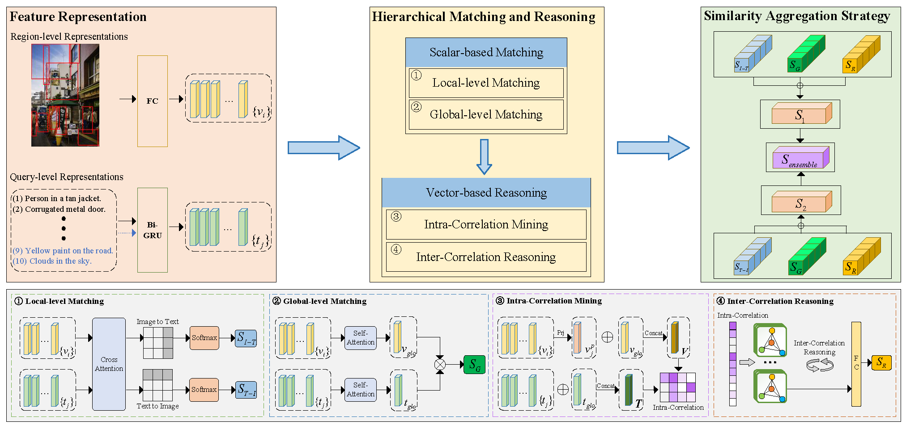

Publications
2025
NeurIPS 2025

Versatile Transferable Unlearnable Example Generator
Conference on Neural Information Processing Systems (NeurIPS), 2025
IEEE TMM

Visual Semantic Contextualization Network for Multi-Query Image Retrieval
IEEE Transactions on Multimedia (TMM), 2025
2024
Neural Networks
